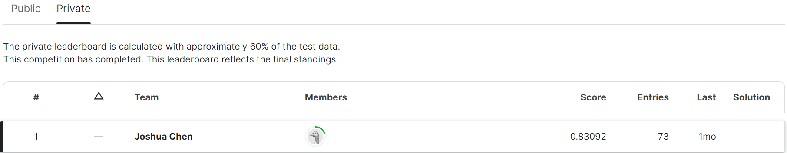
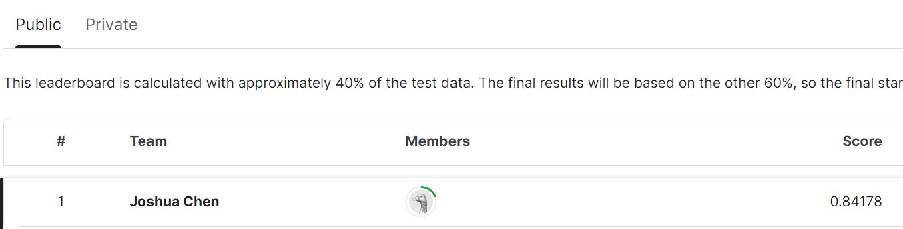
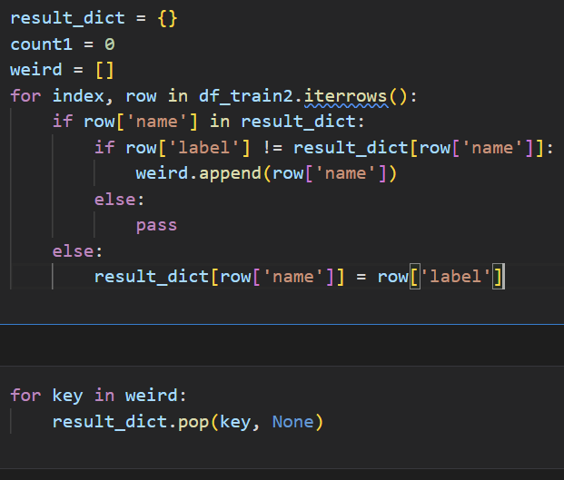
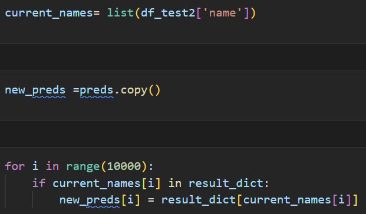

def preprocess_df(df, stemming=False):
# get English stopwords
stop_words = set(stopwords.words('english'))
stop_words.add('would')
stop_words.add('The')
# prepare translation table to translate punctuation to space
translator = str.maketrans(string.punctuation, ' ' * len(string.punctuation))
preprocessed_sentences = []
for i, row in df.iterrows():
sent = row["text"]
sent_nopuncts = sent.translate(translator)
words_list = sent_nopuncts.strip().split()
if stemming == True:
words_list = [ps.stem(word) for word in words_list]
filtered_words = [word for word in words_list if word not in stop_words and len(word) != 1] # also skip space from above translation
preprocessed_sentences.append(" ".join(filtered_words))
df["text"] = preprocessed_sentences
return dfRestaurant Category Prediction
About this project
The goal of this project is to predict the restaurant type using details about the restaurant and their reviews. There is also a Kaggle Competition Page associated with this project.
Leaderboard
This is my position on the Kaggle Leader Board:  
Data
The data is collected from Yelp restaurant reviews, data contains unstructured features and variables. While I mainly focused on the customer reviews, I’ve also incorporated some of the other features.
Text Preprocessing
to preprocess the text, I removed the stop words and tested out stemmming, with the conclusion of without stemming, the model performs better. # Text Representation To transform the text into numerical features for ML models to process, I’ve tested Word2Vec, CBOW, skip-gram and TFIDF. I found that TFIDF significantly improved the accuracy, likely due to its ability to empasize important words.
# tfidf = TfidfVectorizer(strip_accents=None,
# lowercase=True,
# preprocessor=None,
# tokenizer=word_tokenize,
# use_idf=True,
# norm='l2',
# smooth_idf=True,
# stop_words= 'english',
# max_df=0.4,
# sublinear_tf=True)Other features
As I’ve stated above, I also included other features in addition to the text, after preprocessing these texts, I then included these features with the tfidf features. I than applied MinMaxScaler to ensure that the additional features are scaled such that the largest value is the largest value in the TFIDF vector.
The MinMaxScaler step is important as it ensured that no single type of feature dominates the others due to differences in scale
Model
To predict the category, I used a simple logistic regression. I’ve also tried other classifiers but did not find any significant improvements to the accuracy.
Post Prediciton Processing
After generating predictions, I manually adjusted them if a restaurant appeared in both the training and test datasets. However, I observed that many restaurants, particularly fast-food chains, were associated with multiple categories. For instance, Taco Bell was categorized as Mexican in one instance and American in another. To address this inconsistency, I refined the training dataset by removing restaurants with multiple categories. I retained only those restaurants that had more than two entries and a consistent category assignment in the training dataset for the prediction process.  
Links
For project repo:click here